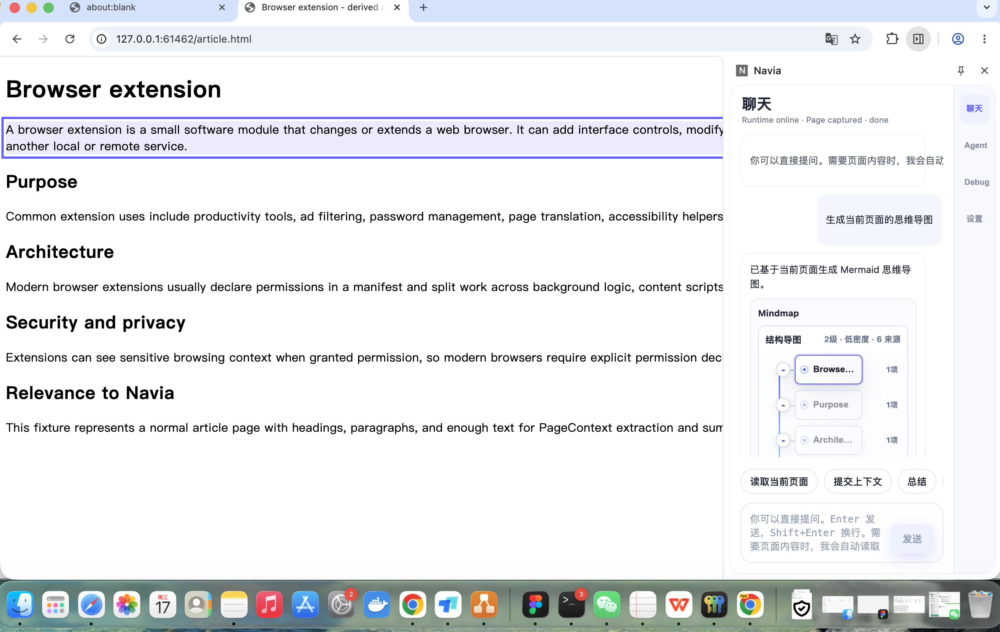
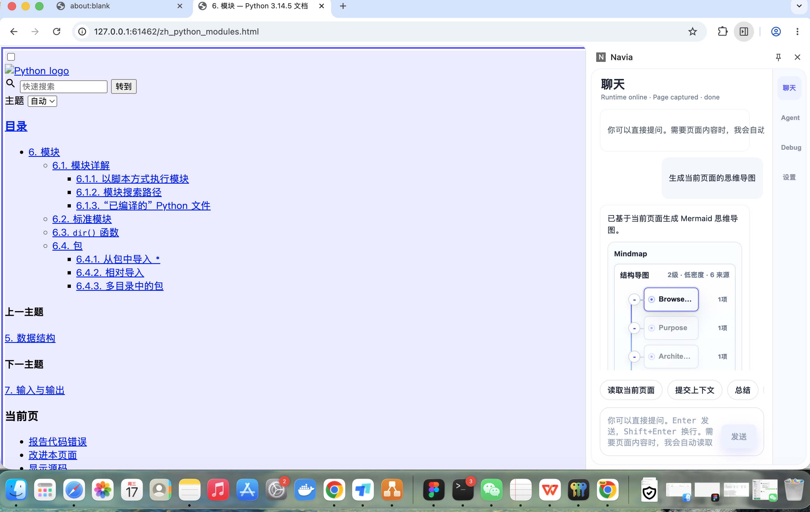

1. 当前结论
当前实现已经具备什么
Navia 可以在 Chrome 原生 Side Panel 中生成 Evidence Card Mindmap，并通过来源卡片进行反跳或 fallback evidence 展示。
当前体验为什么仍不理想
当前 UI 已从大文本卡片收敛为紧凑树形，但 C 模块仍把段落句子或重复主题作为节点标题。用户需要看很多相似节点，无法快速形成页面结构认知。
2. 目标架构与当前架构
目标架构轮廓
当前实现：A/C/D/B 已接通，B 负责 Evidence Card 渲染；但 C 还没有完成“语义短标签 + 主题分组 + 关系边”能力。因此样式方案不能只靠 CSS，需要 C/B 联合升级。
3. 当前真实体验截图证据


4. 样式方案备选
以下概念图仅表达布局与交互方向，不代表当前已经实现。实际落地需要按 V1.3/V1.4 阶段门禁推进。
方案 A：紧凑证据树
将当前 Evidence Card 改造成更明确的树状结构：根节点代表页面主题，一级节点代表页面的 4-6 个关键分区，叶子节点代表事实或论点。
| 优点 | 最符合当前 Side Panel 尺寸；实现成本最低；能保留 SourceRef 和反跳。 |
|---|---|
| 缺点 | 关系表达有限，复杂网页可能仍需要折叠/展开。 |
| 需要改造 | C 生成短标签与层级分组；B 做折叠、选中态、来源面板。 |
| 适合场景 | 文章、文档、教程、产品说明页。 |
方案 B：径向主题图
以页面主题为中心，外围显示 5-7 个主题簇。用户第一眼看到“这页讲什么”和“有哪些方向”。点击主题后，右侧或下方展开来源证据。
| 优点 | 概览感强，视觉上更像传统思维导图；适合快速理解页面。 |
|---|---|
| 缺点 | Side Panel 宽度较窄，复杂节点容易挤压；更适合全屏或弹出大图模式。 |
| 需要改造 | C 输出 topic clusters；B 增加径向布局和缩放/拖拽。 |
| 适合场景 | 概念型文章、综述、博客、产品战略页。 |
方案 C：关系网络图
把页面抽象成实体、观点、证据、风险之间的关系网络。树只表示层级，网络图可以表示“支持、反对、引用、因果、并列”等关系。
| 优点 | 信息密度最高，适合复杂内容和后续知识库沉淀。 |
|---|---|
| 缺点 | 需要更强的 A/C 语义抽取；Side Panel 小屏操作复杂。 |
| 需要改造 | C 输出 typed edges；B 引入图布局引擎或自研轻量布局。 |
| 适合场景 | 研究报告、竞品分析、论文、争议型文章。 |
方案 D：流程/时间线导图
当页面是教程、步骤说明、发布日志或方法论时，普通树图不如流程图好理解。该方案将内容组织为时间线或步骤线。
| 优点 | 对教程和操作文档非常清晰，能快速找下一步。 |
|---|---|
| 缺点 | 不适合非流程型文章；需要 A/C 判断页面类型。 |
| 需要改造 | A 标注 procedure/step；C 按页面类型选择 layout preset。 |
| 适合场景 | 教程、API Quickstart、安装文档、发布说明。 |
点击节点后，只在这里展示长文本、来源、反跳状态。
方案 E：双层概览 + 证据抽屉
导图区域只负责结构理解；证据抽屉负责长文本、引用和反跳。它能解决“节点里文字太多”与“来源又必须可验证”的矛盾。
| 优点 | 最适合 Navia 的伴读场景；结构和证据职责清晰。 |
|---|---|
| 缺点 | 需要更完整的选中态、抽屉状态和键盘导航。 |
| 需要改造 | B 重构 MindmapSurface + EvidenceDrawer；C 输出 displayLabel 和 detailText。 |
| 适合场景 | Side Panel 主体验、Debug 可验证 JSON、反跳证据展示。 |
5. 推荐路径
短期：方案 A
继续收敛当前 Evidence Card Tree，让它稳定、紧凑、可读，作为 V1.3/V1.4 的默认形态。
中期：方案 E
形成“结构导图 + 证据抽屉”的正式产品范式，保证结构扫读和来源可信同时成立。
长期：方案 C
在 A/C 语义抽取成熟后，引入关系网络图，为 V2 知识库和长期记忆提供更强表达。
6. 下一步开发门槛
| 模块 | 需要补强 | 验收方式 |
|---|---|---|
| A 页面感知 | 输出更高质量 digest kind、importance、headingPath、sourceRefs。 | 真实网页样本中，核心主题覆盖率和噪声率可量化。 |
| C Mindmap | 生成 displayLabel、主题分组、重复节点合并、typed edges。 | 同一页面节点数控制在 6-12 个主节点，重复标签率低于阈值。 |
| B 渲染器 | 结构图和证据抽屉拆分，支持 hover、selected、located、fallback 状态。 | 原生 Side Panel 截图必须可读，不能出现竖排、重叠、长文本淹没结构。 |
| D 适配层 | 继续保持唯一 Artifact/Event/Trace 边界，不让 B/C 直接写 Trace。 | Trace 中 mindmap artifact 与 sourceRef 关联完整。 |
本页不引入 RAG、Memory、Web Research、PPT、Deep Research 或多 Agent 能力；只讨论 V1.x AI 伴读中的 Mindmap 表达层和 C/B 协作升级。